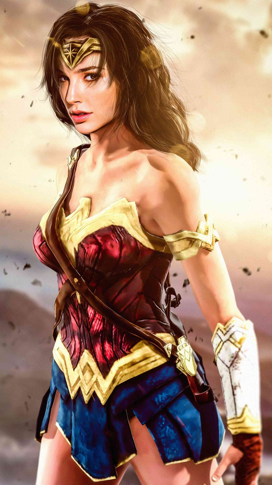
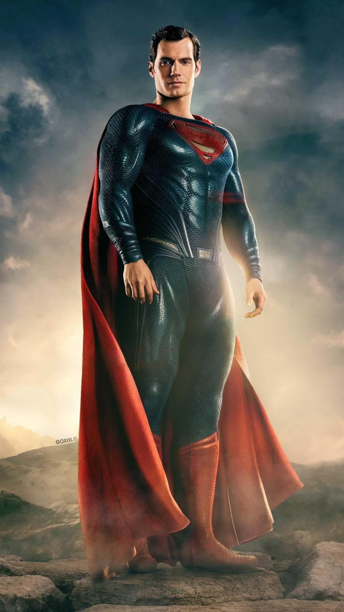
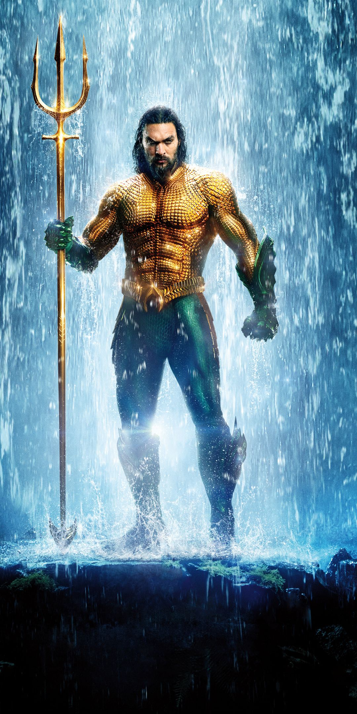
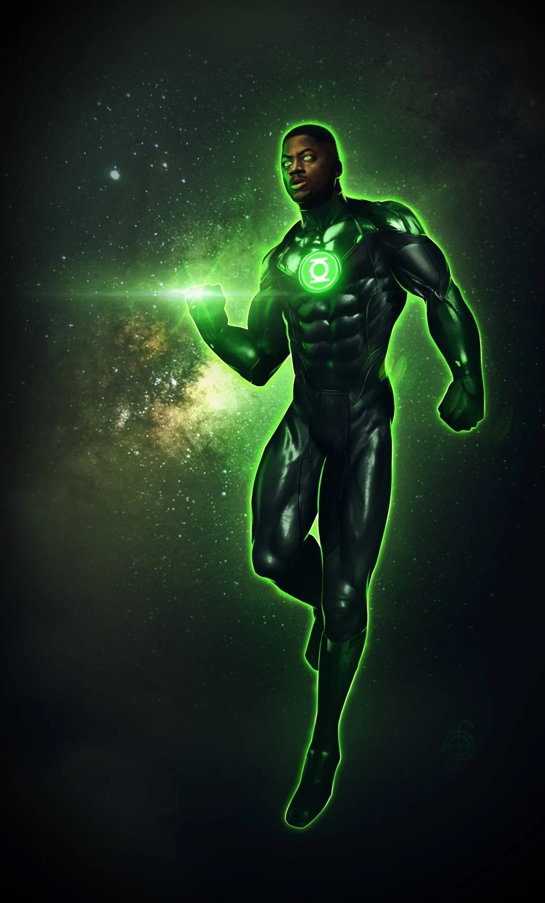
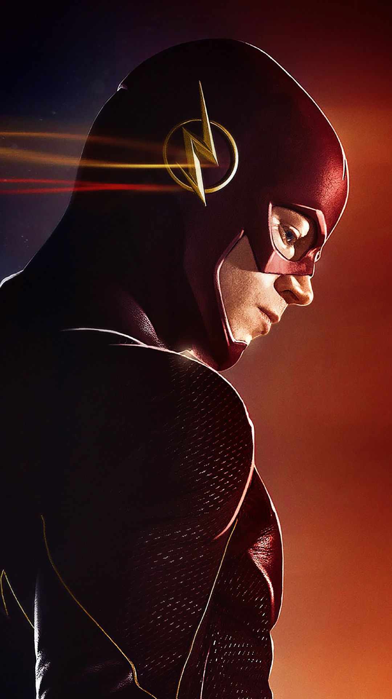
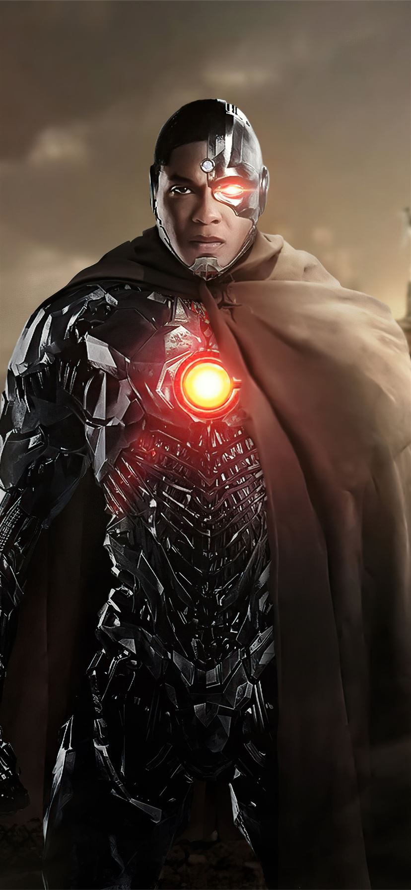

The Justice League is an organization comprised of the world's greatest superheroes. Together, they operate as a team dedicated to fighting crime and injustice, and act as Earth's first line of defense from terrestrial, extra-terrestrial and inter-dimensional threats. The founding members were Aquaman, Batman, Cyborg, The Flash, Green Lantern, Superman and Wonder Woman.
JUSTICE LEAGUE
-

-

-

-

-

-

SUPERMAN
"THE LAST SON OF KRYPTON"
Superman is the sole survivor of the planet Krypton. His father, Jor-El, discovered that a nuclear chain reaction was building inside Krypton that would soon shatter the entire world. Jor-El therefore had his unborn son Kal-El removed from the Kryptonian Gestation Chambers and affixed the life matrix containing Kal-El to an experimental vessel for travel through hyperspace. Jor-El launched the starcraft toward Earth just before Krypton exploded.
Superman was, in effect, born on Earth when the starcraft landed there. Jonathan and Martha Kent found the infant inside the vessel and brought him to their farm in Smallville, Kansas. Since he appeared entirely human, the Kents assumed that the baby was a victim of a cruel experiment. At this time the baby had no super powers. The Kents named the infant Clark and raised him as their own son.
As clark grew older his Kryptonian body began developing superhuman abilities. When Clark was eighteen, took him to the field where his starcraft still lay hidden and explained how he and Martha had found him. Clark resolved to use his powers from then on only for the good of mankind. After revealing his secret to his childhood friend, Lana Lang, Clark left Smallville to study at Metropolis University.
THE LAST SON OF KRYPTON
WONDER-WOMAN
"PRINCESS DIANA OF THEMYSCIRA"
One of the most beloved and iconic DC Super Heroes of all time, Wonder Woman has stood for nearly eighty years as a symbol of truth, justice and equality to people everywhere. Raised on the hidden island of Themyscira, also known as Paradise Island, Diana is an Amazon, like the figures of Greek legend, and her people's gift to humanity.
As Themyscira's emissary to Man's World, Diana has made it her duty to lead by example, even if the differences between her birthplace and new home sometimes present hurdles for her to jump. She has come to represent the possibility and potential of life without war, hate or violence, and she is a beacon of hope to all who find themselves in need. She stands as an equal among the most powerful Super Heroes, with a sense of purpose to protect the world from injustice in all forms. Diana's job, however, is anything but easy. Constantly torn between her mission to promote peace and her need to fight back against the pervasive violence of her new home, Diana struggles to walk a line between her warrior strength and endless compa ssion each and every day.
PRINCESS DIANA OF THEMYSCIRA
AQUAMAN
"KING OF THE SEVEN SEAS"
Monarch of the undersea realm of Atlantis and King of the Seven Seas, Aquaman is one of the most powerful DC Super Heroes—commanding a kingdom that covers three-quarters of the Earth’s surface, including all the creatures contained within. Arthur Curry came from humble beginnings, as most of his life was spent exiled from his home, unaware of his noble origins. When he finally took the throne as an adult, he became the most legendary king in Atlantean history.
A founding member of the Justice League of America, Aquaman has fought alongside Superman, Batman and Wonder Woman and held his own against the biggest threats the universe has ever seen. Despite being misunderstood by many as someone who merely “talks to fish,” Aquaman’s super-strength and fighting prowess alone make him a force to be reckoned with. His telepathic abilities make him one of the most powerful minds on the planet. If one chooses to underestimate the sea king, they do so at their own peril.
KING OF THE SEVEN SEAS
GREEN LANTERN
"GREEN LANTERN"
Test pilot Hal Jordan went from being a novelty, the first-ever human Green Lantern, to one of the most legendary Lanterns to ever wield a power ring. Hal Jordan’s life was changed twice by crashing aircraft. The first time was when he witnessed the death of his father, pilot Martin Jordan. The second was when, as an adult and trained pilot himself, he was summoned to the crashed wreckage of a spaceship belonging to an alien named Abin Sur. Abin explained that he was a member of the Green Lantern Corps, an organization of beings from across the cosmos, armed with power rings fueled by the green energy of all willpower in the universe. Upon his death, Abin entrusted his ring and duties as the Green Lantern of Earth’s space sector to Hal Jordan.
Hal’s life as a Green Lantern has not been easy. He’s had to fight not only enemies, but often friends, colleagues and loved ones. But despite the strain his Green Lantern identity has put on his life, Hal is an honest man who can operate without fear, and is always willing to protect those in need—whether alone, with the Corps or alongside the Justice League and Earth’s other Super Heroes. For Hal has sworn the oath of every Green Lantern—that no evil will escape his sight.
GREEN LANTERN
THE FLASH
"THE FASTEST MAN ALIVE"
The mysterious power known as the Speed Force is an energy field that has, over the centuries, granted incredible powers of velocity to certain heroes. The most famous of these is the Flash, also known as the Fastest Man Alive. Ever since the days of World War II, there has been a man clad in red who can run at impossible speeds, using his power to save lives and defend those who cannot defend themselves. All between the ticks of a second.
In the 1940s, college student Jay Garrick acquired his super-speed abilities in a random lab accident and became the first DC Super Hero to go by the name the Flash. Years later, Jay was succeeded by police scientist Barry Allen, until Barry’s former kid partner Wally West took up the mantle at a time when Barry was considered dead. But, when Barry returned, he became the Flash once again. All three generations of speedsters have been cornerstone members of both the Justice Society and Justice League.
The Flash has mastery over not just speed, but time itself, and he has often used his powers to travel though different eras and even into other dimensions. Although the Flash has not always been fast enough to outrun personal tragedy when it has come for him, he always does his best to prevent the same from happening to the people of Central City and Keystone City. In so doing, he's earned himself a spot among the greatest Super Heroes the DC Universe has ever known.
THE FASTEST MAN ALIVE
CYBORG
"HALF HUMAN, HALF MACHINE"
Part man, part machine, Vic Stone is a former member of the Teen Titans and a current member of the Justice League who wrestles to preserve his humanity with every new upgrade. Although he always exhibited a genius level intellect, young Victor Stone didn’t want a life dedicated to science and research like his parents. Instead, Vic dreamed of being a football player, and devoted all of his time to becoming a star athlete while he was still in high school. But a tragic twist of fate that should have left him dead instead found him becoming part man and part machine—a Cyborg.
Saved by his scientist father after an accident left very little of Victor’s body intact, Dr. Silas Stone used all of his advanced scientific knowledge to save his only child’s life, and to rebuild him into a superior being, one that was arguably now more machine than man. As a cyborg, Vic was now far stronger than the average person, could interface with computers, and emit various types of energy that made him a formidable fighter. Although he ultimately chose the path of the superhero, Victor never fully acclimated to being only partially human. He always carried a sadness within him as he mourns for the normal life he never had.
One of the planet’s greatest heroes, Cyborg nevertheless puts all of his internal struggles aside when the time comes to save innocent lives and protect the Earth. Because of his ability to interface with computer systems, perhaps there is no hero more fitting for this modern, digital age.